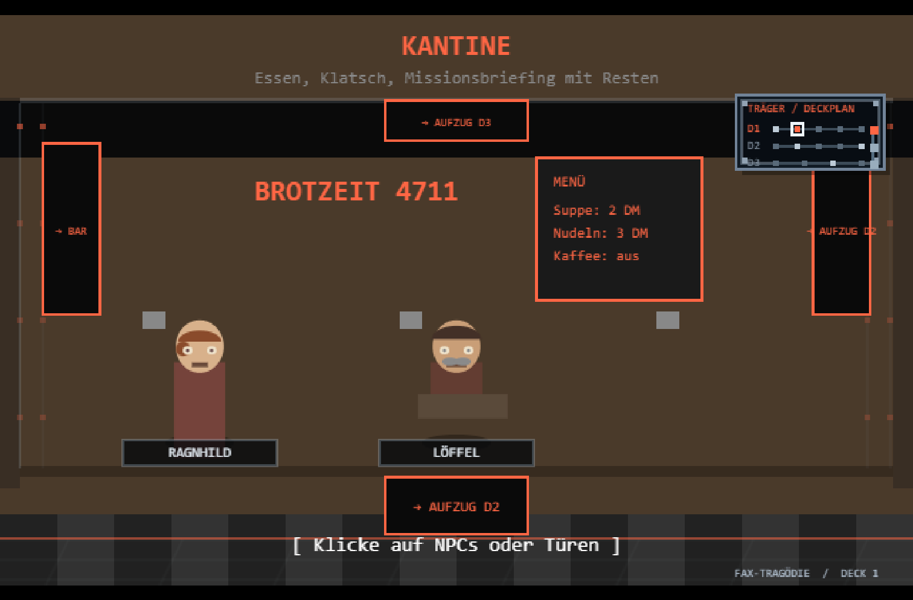
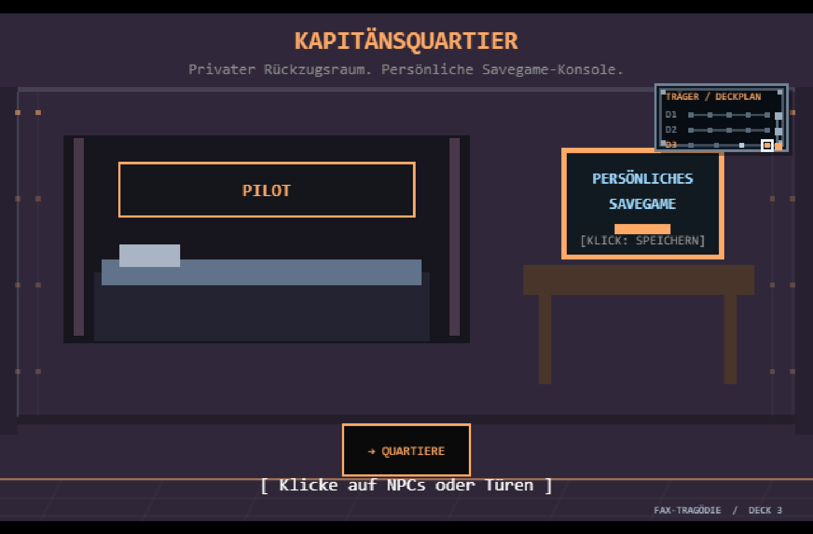
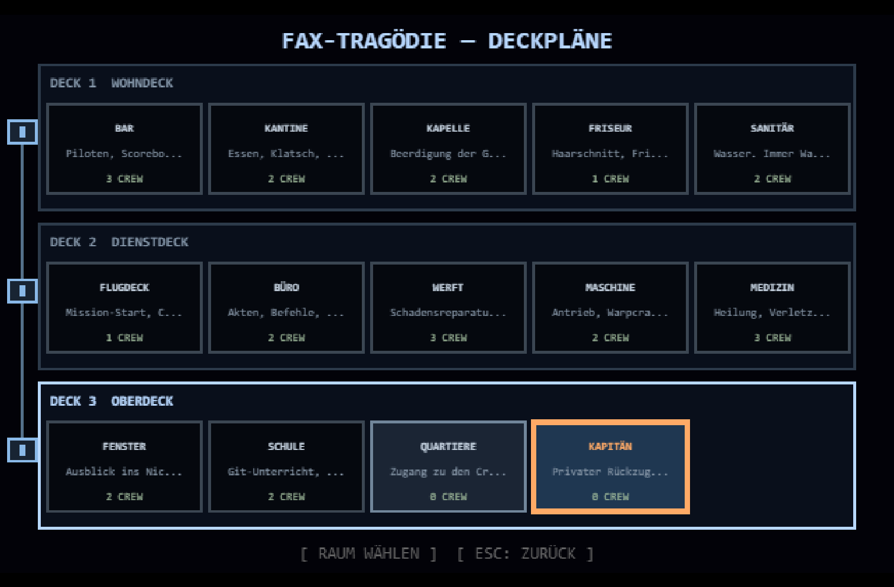

Sternenkorps Interne | Eine Seite. Kein zweiter Baum. Nur Verweise.
DAS PRINZIP
Es gibt keinen zweiten Dokumentationsbaum. Die Wiki ist ein Hub: Sie zeigt auf die Seiten, die es bereits gibt. Neue Doku entsteht in den Stammdateien (KONZEPTE.md, PATCHNOTES.md, TODO.md) oder in einer Site-Seite — die Wiki verlinkt danach. Was hier nicht verlinkt ist, existiert nicht.
"Wir drucken keine zweite Auflage. Wir zeigen auf die erste." — ARCHIV
PRINZIP
BORDNOTIZEN
Ein Rundgang durchs Schiff: Gesichter, Räume und Deckplan
14. Oktober 2026 · Grafik-Pass für den Träger-Innenraum
Die erste Runde durchs Schiff hat einen seltsamen Personalengpass gezeigt: Der Porträtzeichner war an Bord, kannte aber nur einen Teil der Crew. Für die übrigen Personen gab es farbige Platzhalter ohne Gesicht. Jetzt hat jedes Besatzungsmitglied in den Räumen ein eigenes prozedurales Porträt mit passender Uniform, Frisur und kleinen Erkennungsmerkmalen. Die Figuren stehen etwas deutlicher im Raum und tragen Namensschilder, die auch angeklickt werden können.
Die Räume behalten ihre selbst gezeichneten Möbel und ihren 1990er-Pixel-Look. Dezente Spanten, Nieten, Bodenplatten und eine farbige Deckleiste geben ihnen nun einen gemeinsamen Schiffsrumpf-Rahmen, ohne Bar, Kapelle oder Maschinenraum gleich aussehen zu lassen. Die Minikarte sitzt als kleines, gerahmtes Wanddisplay im Raum — kein dauerhaft eingeblendetes HUD. Ein Klick auf die Wandkarte öffnet den großen Deckplan mit drei Decks und Aufzugsschacht.
Die neuen Ansichten sind echte Browser-Aufnahmen des Spiels, keine nachträglich gemalten Konzeptbilder:

Kantine — Gesichter und Namensschilder machen die Crew im Raum erkennbar.

Quartiergang — vorerst ist nur die eigene Kabine offen.

Großer Deckplan — erscheint erst nach Klick auf die kleine Karte an der Wand.
Weiterhin gilt: Die Zeichnungen entstehen im Canvas, ohne externe Grafik-Assets. Diese Runde ist ein lesbarer, lebendigerer Platzhalter — noch keine fertig ausmodellierte Innenarchitektur und noch keine zugänglichen Crew-Privaträume.
Kein Server, kein Internet, kein Tracking. Nur Fax. Stand: v0.75-dev — IM RAUM (Flugmodell, Nachbrenner [SHIFT], Feind-KI, Wingman Sechs, Träger im Feld), 14 Räume auf drei Decks, persönliches Save/Load-Quartier, Abspann nach Sieg, Ingame-Handbuch [H].
Die 14 Räume der FAX-TRAGÖDIE: Bar, Kantine, Büro, Kapelle, Krankenstation, Maschinenraum, Friseur, Beobachtungsdeck, Flugdeck, Schulraum "ZWEIG", Quartiergang und das persönliche Zimmer mit Ihrem Namen.
Was an Quartieren, Savegames, Räumen, Cockpit und Systemschaden erledigt ist — und warum der nächste Cockpit-Pass auf echte Schiffsklassen warten sollte.